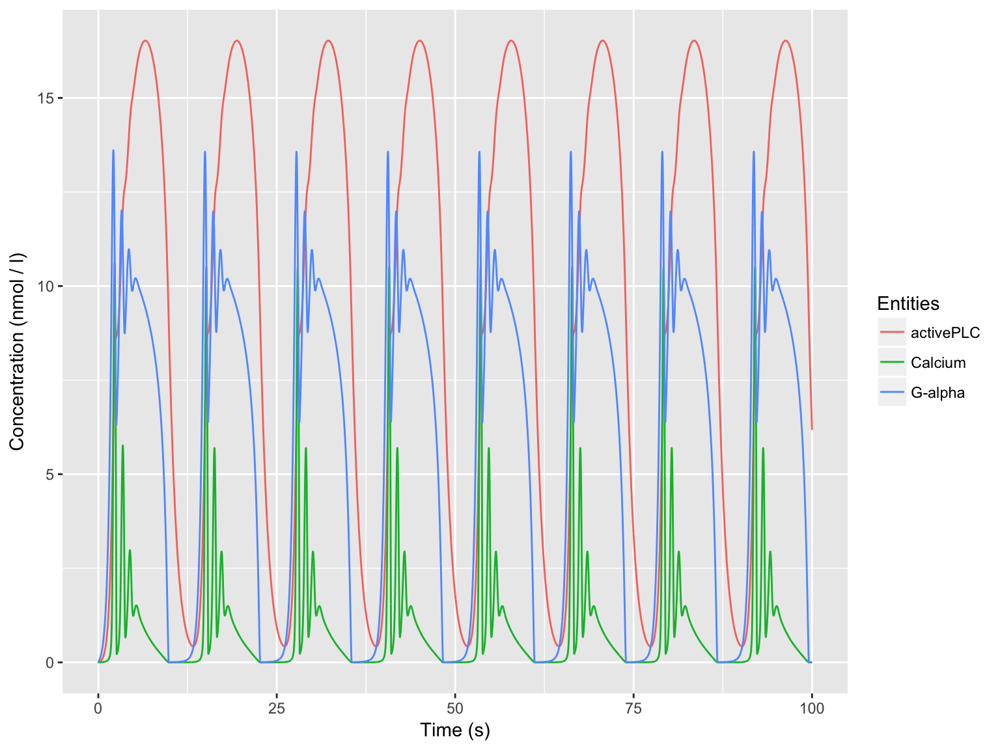

CoRC Introduction
Jonas Förster & Jürgen Pahle
2017-10-18

Getting started
Initial Setup
To start, load the library.
library(CoRC)
# optionally use this at the start of any script to verify CoRC is ready.
getCopasi(quiet = TRUE)From this point on, CoRC keeps an instance of Copasi running in the background. This instance can load up as many models as desired.
Loading a model
Initially, no model is loaded.
runTimeCourse()
#> Error: No model currently in use.You can load a model by using one of the model management commands.
newModel()
loadModel(path)
loadModelFromString(model_string)
loadSBML(path)
loadExamples()When loading a model, the returned object is a reference to the model that will give basic information when printed.
model <- loadSBML("http://www.ebi.ac.uk/biomodels-main/download?mid=BIOMD0000000329")
model
#> # A copasi model reference:
#> Model name: "Kummer2000 - Oscillations in Calcium Signalling"
#> Number of compartments: 1
#> Number of species: 3
#> Number of reactions: 8This reference can be used with most functions using the model argument but can also be safely ignored when working with a single model.
Workflow
CoRC contains a plethora of functions for working with Copasi models. The most basic ones required for common workflows are used for manipulation of model entities and running tasks.
str(getSpecies())
#> Classes 'tbl_df', 'tbl' and 'data.frame': 3 obs. of 12 variables:
#> $ key : chr "G-alpha{compartment}" "activePLC{compartment}" "Calcium{compartment}"
#> $ name : chr "G-alpha" "activePLC" "Calcium"
#> $ compartment : chr "compartment" "compartment" "compartment"
#> $ type : chr "reactions" "reactions" "reactions"
#> $ initial_concentration: num 0.01 0.01 0.01
#> $ initial_number : num 0.602 0.602 0.602
#> $ concentration : num NaN NaN NaN
#> $ number : num NaN NaN NaN
#> $ rate : num 0 0 0
#> $ number_rate : num 0 0 0
#> $ initial_expression : chr NA NA NA
#> $ expression : chr NA NA NAsetSpecies("G-alpha", initial_concentration = 0.02)
timecourse <- runTimeCourse(duration = 100, intervals = 10000)This enables quick definition of loops, for example to scan through various concentration values of a species.
ga_concentrations <- 1:5
for (ga_conc in ga_concentrations) {
setSpecies("G-alpha", initial_concentration = ga_conc)
print(paste(
"Current concentration:", getSpecies("G-alpha")$initial_concentration
))
# further commands e.g.:
# runTimecourse()
# saveModel(paste0("ga", ga_value, ".cps"))
}
#> [1] "Current concentration: 1"
#> [1] "Current concentration: 2"
#> [1] "Current concentration: 3"
#> [1] "Current concentration: 4"
#> [1] "Current concentration: 5"CoRC data
Data generated by CoRC is returned as common R structures such as lists, data frames and matrices. Data frames are wrapped in an equivalent structure called a tibble which behaves identical in most circumstances but gives a reasonable overview when printing.
timecourse$result
#> # A tibble: 10,001 x 4
#> Time `G-alpha` activePLC Calcium
#> <dbl> <dbl> <dbl> <dbl>
#> 1 0.00 0.02000000 0.01000000 0.0100000000
#> 2 0.01 0.02272268 0.01015319 0.0003199739
#> 3 0.02 0.02552420 0.01033875 0.0003590553
#> 4 0.03 0.02840587 0.01055732 0.0004000496
#> 5 0.04 0.03136984 0.01080951 0.0004422365
#> 6 0.05 0.03441839 0.01109600 0.0004856505
#> 7 0.06 0.03755381 0.01141747 0.0005303260
#> 8 0.07 0.04077843 0.01177460 0.0005762987
#> 9 0.08 0.04409464 0.01216813 0.0006236046
#> 10 0.09 0.04750487 0.01259880 0.0006722809
#> # ... with 9,991 more rowsIt is encouraged to use the ggplot2 package for generating publication-ready plots from CoRC data. The helper function autoplot can be used to quickly print timecourse data.
library(ggplot2)
autoplot(timecourse)
Final steps
Finally, a model can be saved via several model management commands.
saveModel(filename)
saveModelToString()
saveSBML(path, level = 3, version = 1)To free up memory, unload any loaded models or restart R.
unloadModel(model)
unloadAllModels()Examples
Examples and case-studies can be found in the examples article on the CoRC website.